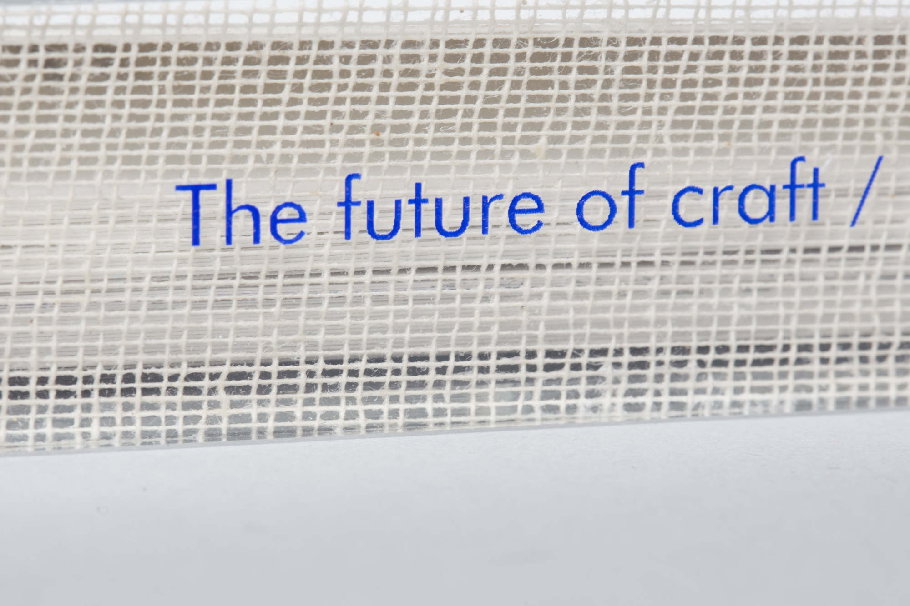
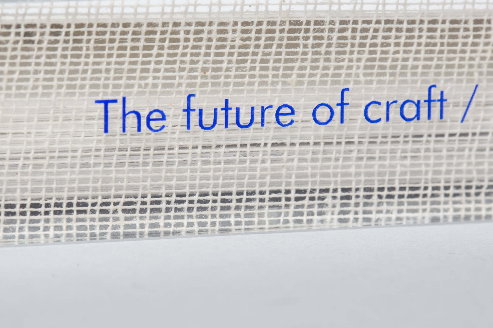
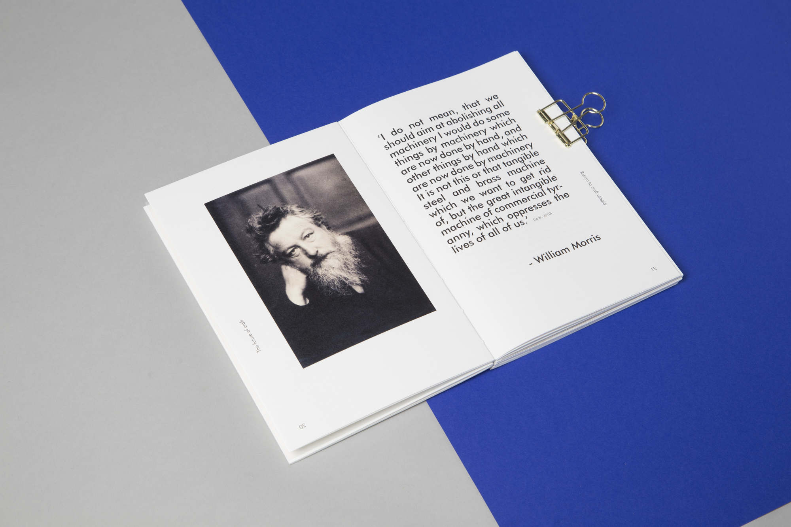
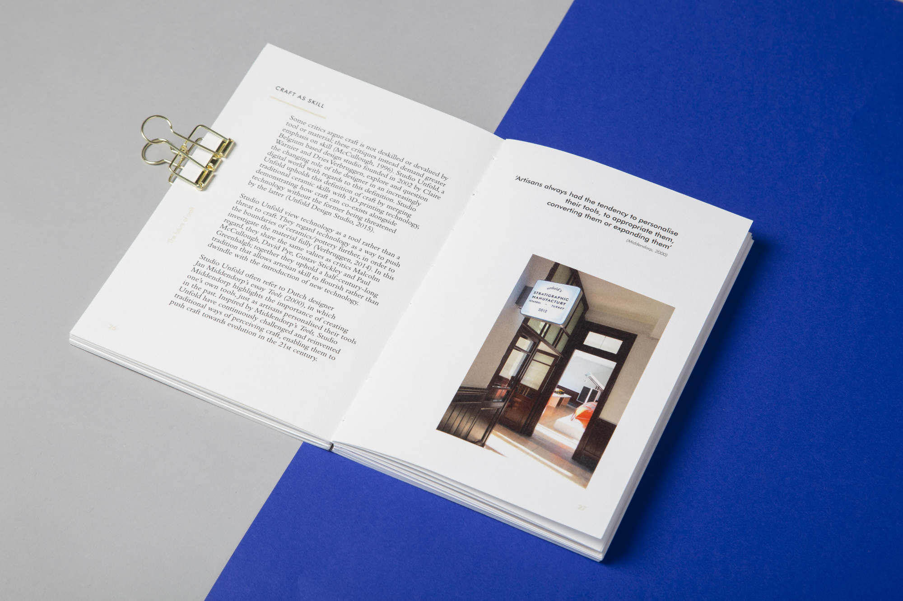
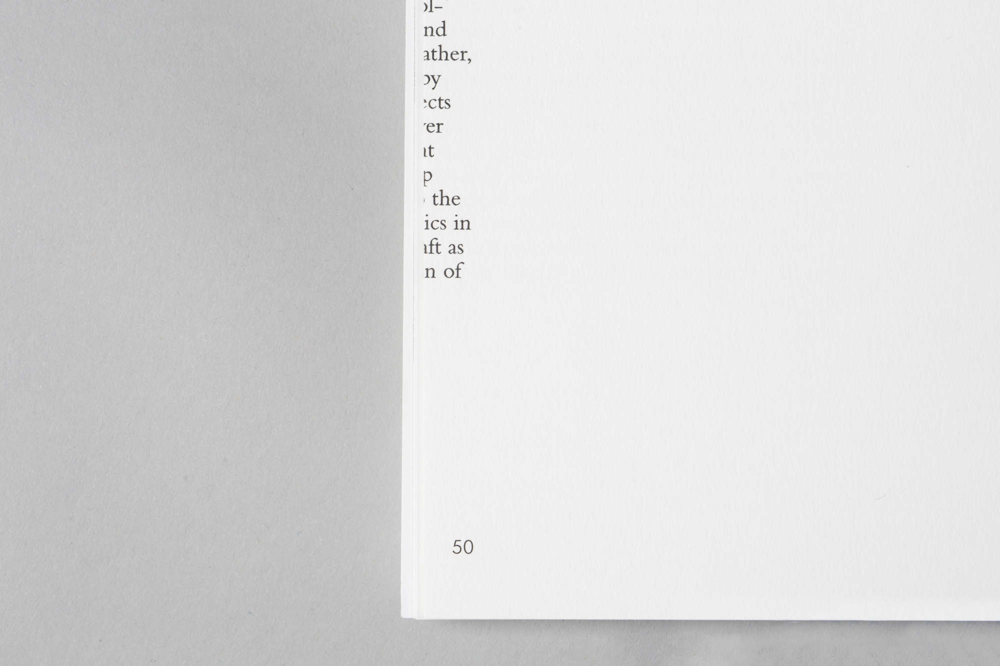

Manu + Facere
Editorial / Concept / Print
My final year thesis, Manu Facèré, attempts to define craft and explore how it will develop in this digital age. The project discusses the importance of leaving craft’s traditional and narrow definition (one threatened by technology and modernity) behind, replaced instead by one that considers technology as a craftsman's tool. A range of print processes were used for this design, to highlight the importance of precision, tool and control over process within craft.

 






